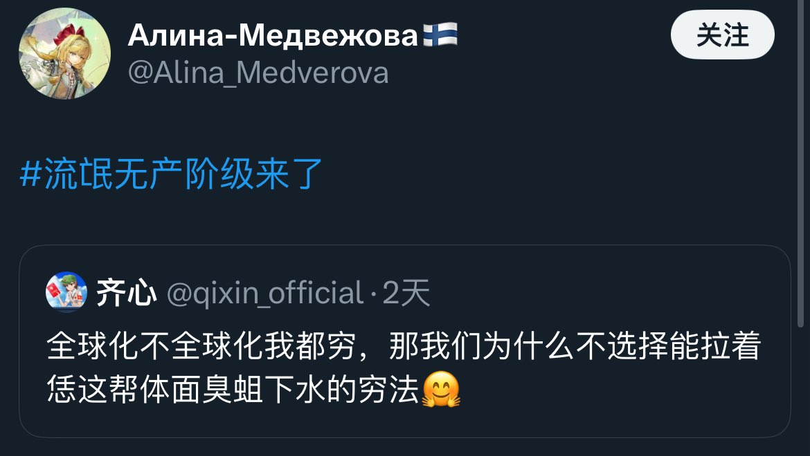

𝐀𝐬𝐡𝐥𝐞𝐲 𝐁𝐥𝐨𝐜𝐤🍥🌹🇹🇼🏳️⚧️
@bolckAshley
@4698pjxbs 我的評價是這種能拿出五六十個W整這種事情的要是也能算無產階級的話那實在是無敵了👍

齐心
@qixin_official
@Young2568 纪委说了没问题，他没意见，我父母那医院领导前年刚被抓，我爹因为给他送过五六十个也被调查了，但是因为这狗领导收了钱不办事，所以屁事没有😅
张春桥🇵🇸🇺🇦
@4698pjxbs
在下图这位大佐眼中，“拉着体面臭蛆下水”属于是“流氓无产阶级”；在你眼中，给资本家卖命充当打手的黑社会混混是“流氓无产阶级”，您二位要不先讨论一下到底哪个算“流氓无产阶级”，我们腊友也不是照单全收的 https://t.co/S5bN2tR8Ni https://t.co/Y71Eraatur